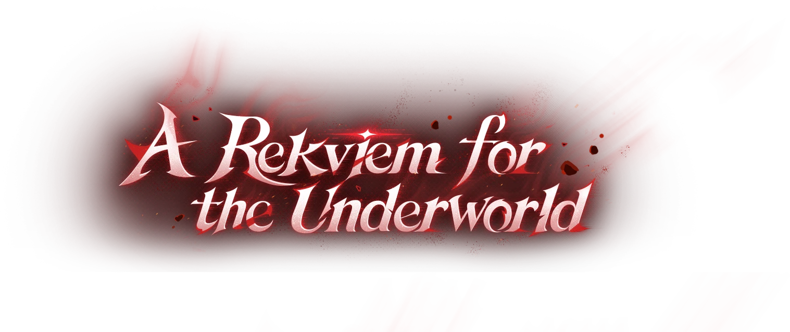
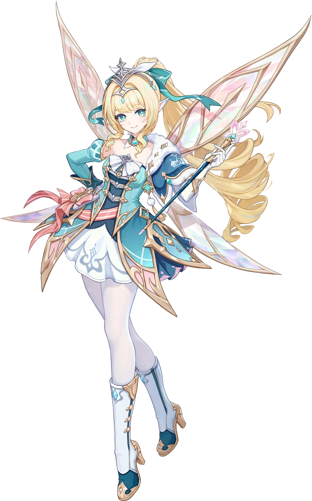

NEW
Vesna
★★★★★
Commander of the Druzhna and the Tsaritsa's keen blade.

PC Download(HoYoPlay) ↗Version 7.1 Now Available
✦Newcomer BenefitsOFFICIAL VERSION PAGE · PRIVATE DESIGN STUDY
本地首屏视频无音轨；有声宣传片请前往原站。

NEW
★★★★★
Commander of the Druzhna and the Tsaritsa's keen blade.
Official character selection / 当前国际官网角色章节局部复现
PLAN YOUR ADVENTURE
本地保留官网活动日历图；点击可查看完整大图。
官方最新活动信息 ↗